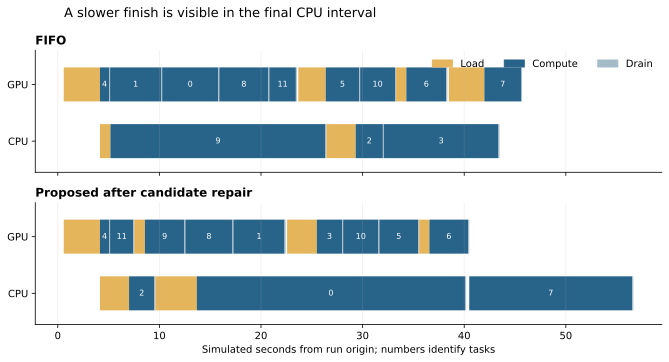
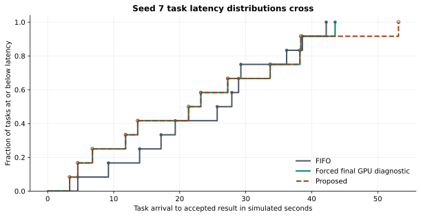
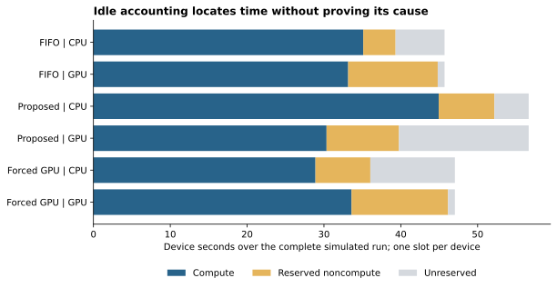
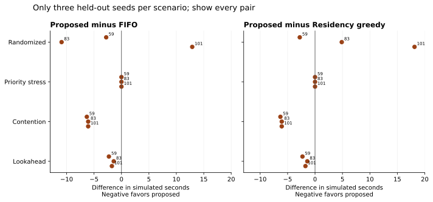

Browse chapters
6 Explain a losing scheduler run
State the loss precisely
The pinned diagnostic workload is randomized seed 7 in the supplied simulator. FIFO finishes the complete batch at 45.694653 simulated seconds. The proposed policy finishes at 56.642415 seconds, both before and after a candidate-generation repair. The difference is 10.947762 seconds, about 24.0 percent of FIFO's time. All 12 tasks complete in these diagnostic runs.
These are observed simulator results. They do not establish real-device throughput or universal policy quality. They are strong enough to ask a useful local question: what happened in this run, and which controlled change reduces the loss?
The evidence is preserved in the snapshot's loss diagnosis report and five corresponding traces. The companion independently reconstructs task durations from events, checks completion counts, and reconciles phase totals with the report. This is an important first step: before explaining a result, make sure you can reproduce its measurement.
Start with the whole shape
The timeline shows load, compute, and drain intervals on CPU and GPU. Numbers inside compute intervals identify tasks. Read each device row horizontally. Blank space means no displayed task phase occupies that device in the trace. It is not automatically proof that useful work could have run there.

Figure 1. Actual simulator trace intervals for FIFO and the repaired proposed policy on seed 7. The final proposed task runs on the CPU while the GPU row is empty. The chart locates a question; feasibility and score records are needed to explain the choice.
The latency ECDF adds a second perspective. The proposed policy improves some earlier task latencies while making the upper tail worse. A lower middle latency can coexist with a later batch finish. The forced-final-GPU diagnostic is included as a targeted intervention, not as another deployable policy.

Figure 2. Twelve arrival-to-accepted-result task latencies per trace. Curves are descriptive, and these tasks share one workload. They are not 12 independent randomized policy experiments. With this sample size, the report's nearest-rank p95 is its largest task latency.
Account for resource time
For a device with one execution slot, total observed device time can be partitioned into compute time, reserved noncompute time, and unreserved time under this simulator's accounting. The categories sum to the observation duration. Reserved noncompute time includes phases such as loading and draining. Unreserved time is the remaining interval, not a direct measure of wasted opportunity.

Figure 3. The companion verifies the accounting identity for CPU and GPU in each plotted run. The proposed GPU has substantial unreserved time, while the final CPU interval extends the run. Absolute time and the denominator matter: a longer run can have lower utilization even when it performs similar useful work.
This chart prevents an easy mistake. Higher CPU utilization is not necessarily better. A policy can keep a slow CPU busy for longer instead of using a faster GPU and finish later. Utilization is a diagnostic metric. The user-facing objective is useful completion under the required constraints.
Find the decision that matters
Under the proposed policy, the final task, random7, becomes ready at simulated time 40.495955 seconds. It needs the vision model. That model is warm on the CPU; other models occupy the GPU. The policy starts the CPU and completes at 56.642415 seconds.
There were two separate questions. First, did the planner even consider a cold GPU replacement? Second, once it considered that action, did its scoring rule prefer it?
The original candidate helper stopped looking for replacement alternatives when any execution mode already fit. A feasible warm CPU could therefore hide a faster cold GPU option. The repair changed candidate coverage and added a known-cost regression fixture. That is an implementation defect with a concrete test.
However, the complete seed-7 schedule did not improve after the repair. The unchanged 56.642415 second result is useful negative evidence. Fixing one real bug does not guarantee fixing the observed performance loss. Keep the before and after results instead of assuming the repair worked because its unit test passes.
Inspect the score in its own units
After the repair, the decision trace contains these alternatives at the final decision:
| Candidate at time 40.495955 | Shaped score |
|---|---|
| Start the warm CPU | 0.712417 |
| Wait with no immediate action | 0.624792 |
| Evict replicas to prepare the GPU path | 0.597209 |
These scores are not seconds, probabilities, or measured throughput. They combine the planner's modeled progress and penalties. The score rewards partial progress inside a finite horizon and charges setup or eviction effects. Under the configured weights, the earlier-finishing GPU continuation does not receive enough advantage to overcome its penalties.
This is objective alignment in concrete form. A surrogate is a quantity used in place of the true goal because it is convenient to compute or optimize. A good surrogate should rank important choices similarly to the goal. Here, a higher shaped score selects an action that finishes the batch later in the tested state. The ranking mismatch remains after the candidate coverage fix.
Do not infer that every partial-progress reward is wrong. It can be useful when a horizon ends before any task completes. The question is whether its scale and interaction with setup penalties produce the choices you actually want across relevant states.
Use a targeted intervention
The diagnosis forces the final GPU path once, while otherwise keeping the relevant simulator state and physical ledger constraints. That run finishes at 47.038627 seconds, a reduction of 9.603788 seconds relative to the proposed default.
This intervention provides stronger mechanistic evidence than a correlation between GPU idle time and slow completion. It shows that changing that particular decision, under the simulated conditions, improves the outcome. It is not an exact oracle and not a complete general scheduling policy. It still finishes 1.343974 seconds later than FIFO because earlier decisions and readiness times differ.
That remainder matters. It prevents the story from becoming “we found the one cause.” The data supports a substantial local contribution from the final placement choice. It does not isolate all earlier differences or prove the best possible schedule.
Test the attractive alternative explanation
A plausible explanation was that fairness protection caused the loss. The diagnostic disables protection in the proposed policy. The result is 56.665930 seconds, essentially the same slow batch finish. This does not support describing the seed-7 loss as the necessary cost of fairness.
The narrow conclusion is that removing this mechanism did not remove this loss in this tested configuration. It does not prove fairness has zero effect on every task, every schedule, or every workload. Changes to protection can alter earlier dispatch decisions and tradeoffs. A sound conclusion is precise about what was varied and what outcome remained.
Widen the comparison without overselling it
The follow-up uses previously unexamined seeds 59, 83, and 101, with the same protected-turn rule and boost inputs available across policies. The baseline ranking rules still differ by design. Matching service obligations and available information makes this a better policy comparison; it does not make every dispatch decision identical.
| Matched service scenario | FIFO mean seconds | Residency mean seconds | Proposed mean seconds |
|---|---|---|---|
| Randomized | 47.352 | 40.343 | 47.084 |
| Priority stress | 54.166 | 54.166 | 54.166 |
| Contention | 40.904 | 40.904 | 34.755 |
| Lookahead | 14.638 | 14.638 | 12.821 |
The proposed policy is close to FIFO on the randomized mean and slower than the simple residency baseline. It improves the means in the contention and lookahead scenarios. There are only three seeds per scenario. Show every pair and keep the conclusion descriptive.

Figure 4. Every held-out seed is shown. Negative differences favor the proposed policy. Different scenario families answer different questions, so the book does not combine them into an unsupported universal win rate.
A single-parameter follow-up increases delay_weight from 0.25 to 1.0. The randomized proposed mean drops from 47.084 to 43.412 seconds but remains above residency's 40.343 seconds. Contention changes slightly from 34.755 to 34.780; the other displayed scenario means stay the same. This makes objective design a worthwhile next experiment. It does not validate a newly tuned default, especially after the same seeds have now informed the investigation.
End with the next engineering test
The evidence supports keeping the candidate-coverage regression test, improving instrumentation for score components, and comparing completion-oriented objective profiles against stronger simple baselines. Use fresh arrival and model-popularity seeds, fixed resource limits, matched service obligations, and a stated primary objective. Report tail behavior, unresolved work, reloads, and planner cost alongside completion.
Only after that should a shadow evaluation on real runtime traces test the simulator's assumptions. The useful result of this investigation is not an unconditional policy recommendation. It is a narrowed problem: one repaired coverage defect, one demonstrated local score mismatch, a partly explained remaining aggregate loss, and a specific next experiment.